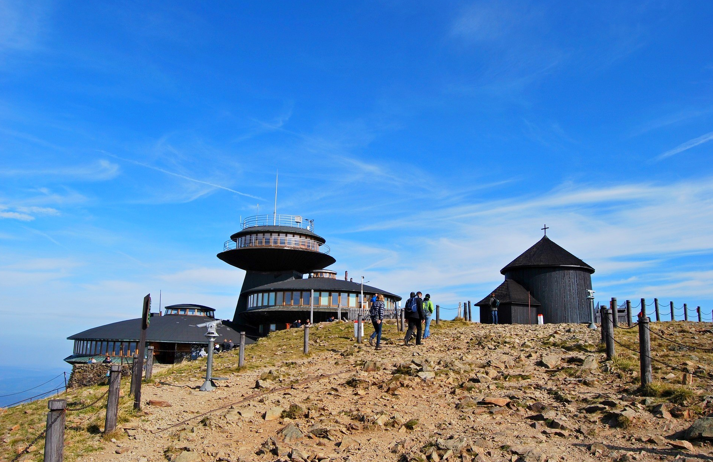

Korona gór polski
jest to lista 28 najwyższych szczytów wszystkich pasm górskich Polski. Została ustanowiona w 1997 i od tego czasu zrzesza wszelkich ludzi do jej zdobycia. Jest to bardzo interesująca inicjatywa zachęcająca do turystyki górskiej.
Na tej stronie wypisuje i mówie bardziej szczegółowo o 7 jej najwyższych szczytach.
Jeśli chcesz się dowiedzieć więcej o koronie odwiedź oficjalną stronę Klubu Zdobywców Korony Gór Polski (otwiera się w nowej karcie).
Na tej stronie wypisuje i mówie bardziej szczegółowo o 7 jej najwyższych szczytach.
Jeśli chcesz się dowiedzieć więcej o koronie odwiedź oficjalną stronę Klubu Zdobywców Korony Gór Polski (otwiera się w nowej karcie).
Film poradnikowy z wejścia na rysy:
(UWAGA NA GŁOŚNOŚĆ)
(UWAGA NA GŁOŚNOŚĆ)
Link do quizu
Radziejowa
| ← | → |
Radziejowa (1266,5 m) – najwyższy szczyt Beskidu Sądeckiego należący do Korony Gór Polski. Nazwa szczytu pochodzi od osoby o nazwisku lub przydomku Radziej.
Główny grzbiet, patrząc od zachodu, skręca na Radziejowej w prawo, na południe, natomiast na północny wschód odbiega boczny grzbiet kulminujący w Jaworzynie, biegnący ku dolinie Wielkiej Roztoki, a na północ odgałęzia się niewielki grzbiet Magorzycy. Przez główny grzbiet Radziejowej biegnie granica między wsią Jaworki w powiecie nowotarskim i Roztoką Ryterską w powiecie nowosądeckim.
Radziejowa zbudowana jest z piaskowców. Zarówno wierzchołek, jak i stoki Radziejowej są niemal całkowicie porośnięte lasem. Dużą osobliwością jest jedyne w całej Polsce stanowisko pierwiosnka omączonego. Znajduje się na niewielkiej polanie na wysokości 800 m. Odkryte zostało w 1959 r., później wielokrotnie potwierdzone (m.in. w 2000 r.).
Od dnia 15 listopada 2017 roku ponownie wyłączono ją z użytkowania ze względu na zły stan techniczny w postaci spróchnienia konstrukcji. W roku 2019 wybudowano, a w 2020 r. oddano dla ruchu turystycznego nową, bezpieczniejszą wieżę widokową na Radziejowej.
Roztacza się z niej rozległa panorama na wszystkie strony. Wraz z budową wieży wyznaczono nową ścieżkę przyrodniczą „Rogasiowy Szlak” w dolinie Roztoki Małej.
Oprócz wieży na szczycie znajdują się również pomnik 1000-lecia Polski oraz betonowy obelisk.
Topografia
Znajduje się w głównym grzbiecie Pasma Radziejowej, pomiędzy Wielkim Rogaczem, od którego oddziela ją przełęcz Żłobki, a masywem Złomistego Wierchu, położonego za Przełęczą Długą. Przed Przełęczą Długą znajduje się jeszcze niewybitna kulminacja Małej Radziejowej (1207 m).Główny grzbiet, patrząc od zachodu, skręca na Radziejowej w prawo, na południe, natomiast na północny wschód odbiega boczny grzbiet kulminujący w Jaworzynie, biegnący ku dolinie Wielkiej Roztoki, a na północ odgałęzia się niewielki grzbiet Magorzycy. Przez główny grzbiet Radziejowej biegnie granica między wsią Jaworki w powiecie nowotarskim i Roztoką Ryterską w powiecie nowosądeckim.
Przyroda
Na północnym stoku Radziejowej znajduje się rezerwat przyrody Baniska z jaskinią Bania w Radziejowej oraz małe osuwiskowe jeziorko Młaka, w pobliżu miejsce zwane Ołtarz, z niewielką wychodnią skalną oraz śladami jaskini szczelinowej u podnóża. Na południowym stoku w pobliżu rozejścia dróg (przełęcz Żłobki – Zawory) znajduje się wydajne źródło okresowe nazywane lokalnie Smocze Gardło.Radziejowa zbudowana jest z piaskowców. Zarówno wierzchołek, jak i stoki Radziejowej są niemal całkowicie porośnięte lasem. Dużą osobliwością jest jedyne w całej Polsce stanowisko pierwiosnka omączonego. Znajduje się na niewielkiej polanie na wysokości 800 m. Odkryte zostało w 1959 r., później wielokrotnie potwierdzone (m.in. w 2000 r.).
Turystyka
W 2006 r. na Radziejowej oddana została do użytku drewniana wieża widokowa o wysokości około 20 m. W czerwcu 2010 roku została poważnie uszkodzona, prawdopodobnie przez piorun. Po gruntownym remoncie była znów czynna.Od dnia 15 listopada 2017 roku ponownie wyłączono ją z użytkowania ze względu na zły stan techniczny w postaci spróchnienia konstrukcji. W roku 2019 wybudowano, a w 2020 r. oddano dla ruchu turystycznego nową, bezpieczniejszą wieżę widokową na Radziejowej.
Roztacza się z niej rozległa panorama na wszystkie strony. Wraz z budową wieży wyznaczono nową ścieżkę przyrodniczą „Rogasiowy Szlak” w dolinie Roztoki Małej.
Oprócz wieży na szczycie znajdują się również pomnik 1000-lecia Polski oraz betonowy obelisk.
Turbacz
| ← | → |
Turbacz – najwyższy szczyt Gorców, znajdujący się w centralnym punkcie pasma i tworzący potężny rozróg. Według większości źródeł ma wysokość 1310 m n.p.m. Zbudowany jest z fliszu karpackiego.
Sam wierzchołek Turbacza znajduje się poza Gorczańskim Parkiem Narodowym, którego granica przebiega po wschodniej oraz po północnej stronie szczytu. Na szczycie Turbacza, lub tuż w jego pobliżu graniczy z sobą pięć miejscowości: Łopuszna, Waksmund i Obidowa w powiecie nowotarskim oraz Poręba Wielka i Zasadne w powiecie limanowskim.
Obok schroniska (niewielki, drewniany budynek w lesie) – otwarte w 1980 roku Muzeum Kultury i Turystyki Górskiej PTTK, eksponujące dzieje turystyki w Gorcach, historię schroniska na Turbaczu, opis działalności ruchu oporu podczas II wojny światowej oraz postać Władysława Orkana.
Według Władysława Maciejczaka nazwa etnicznie odnosiła się niegdyś jedynie do Hali Turbacz i została błędnie przeniesiona na szczyt, a prawidłowa nazwa ludowa brzmiała: „Kluczki” (odnotowana w księgach austriackich). Nazwa ta do dziś odnosi się do lasu znajdującego się po południowej stronie Gorców. Bywa także używana przez starszych Zagórzan odnosząc się do samego szczytu.
Topografia
Z Turbacza odbiega kilka górskich grzbietów. Niektóre z nich blisko szczytu rozgałęziają się:- Pasmo Gorca we wschodnim kierunku. Od pasma tego na Kiczorze odgałęzia się boczny grzbiet, który poprzez Knurowską Przełęcz przechodzi w długie Pasmo Lubania;
- grzbiet Mostownicy i Kudłonia w północno-wschodnim kierunku;
- grzbiet Turbaczyka w północnym kierunku;
- grzbiet Suchego Gronia w północno-zachodnim kierunku;
- grzbiet Obidowca ciągnący się na zachód do Przełęczy Sieniawskiej;
- grzbiet Średniego Wierchu, również w zachodnim kierunku;
- grzbiet Bukowiny Obidowskiej w południowo-zachodnim kierunku. Odgałęzia się od niego grzbiet Bukowiny Waksmundzkiej.
Turystyka
Położone pod szczytem, na wysokości 1283 m schronisko PTTK na Turbaczu to okazały kamienny budynek o dwóch prostopadłych skrzydłach z arkadowym wejściem i strzelistym dachem z mansardami, krytym gontem (ponad 100 miejsc noclegowych), otwarty w 1958 roku (projekt: Anna Górska). W pobliżu schroniska znajduje się przekaźnik RTV i telefonii komórkowej. Sam szczyt Turbacza znajduje się 5 minut drogi od schroniska. Jest on mało popularny turystycznie w odróżnieniu od schroniska PTTK.Obok schroniska (niewielki, drewniany budynek w lesie) – otwarte w 1980 roku Muzeum Kultury i Turystyki Górskiej PTTK, eksponujące dzieje turystyki w Gorcach, historię schroniska na Turbaczu, opis działalności ruchu oporu podczas II wojny światowej oraz postać Władysława Orkana.
Nazewnictwo
W gwarach góralskich nazwa Turbacza jest określana jako: Turbac, Trubac, bądź Turboc.Według Władysława Maciejczaka nazwa etnicznie odnosiła się niegdyś jedynie do Hali Turbacz i została błędnie przeniesiona na szczyt, a prawidłowa nazwa ludowa brzmiała: „Kluczki” (odnotowana w księgach austriackich). Nazwa ta do dziś odnosi się do lasu znajdującego się po południowej stronie Gorców. Bywa także używana przez starszych Zagórzan odnosząc się do samego szczytu.
Tarnica

| ← | → |
Tarnica (1346 m) – najwyższy szczyt polskich Bieszczadów i województwa podkarpackiego, wznoszący się na krańcu pasma połonin, w grupie tzw. gniazda Tarnicy i Halicza. Należy do Korony Gór Polski.
Z południowej strony opada w dół wysoka skalna ściana, a niżej rozścielają się wielkie pola kamiennego rumoszu. Na głównej kulminacji znajduje się punkt geodezyjny. W 1987 na szczycie ustawiono 7-metrowy krzyż, upamiętniający – wraz z wmurowaną tablicą – pobyt ks. Karola Wojtyły 5 sierpnia 1953. Po złamaniu się krzyża na wiosnę 2000, w dniu 2 września tego roku postawiono nowy stalowy krzyż (liczący ok. 8,5 metra, ważący ok. 500 kg; wyniesiony przez pielgrzymów na Tarnicę w częściach), który 16 września 2000 poświęcił bp Adam Dyczkowski.
W rejon tych gór prowadzą zaledwie dwa piesze szlaki turystyczne. Pierwszy to końcowy odcinek Głównego Szlaku Beskidzkiego (Ustroń – Wołosate), wiodący od schroniska w Ustrzykach Górnych (znaki czerwone). Odcinek ten w swojej końcowej partii jest bardzo atrakcyjny widokowo, prowadząc do przełęczy pod Tarnicą 1286 m połoninami Szerokiego Wierchu.
Drugim jest bardziej stromy szlak niebieski Biała – Grybów, który prowadzi z Wołosatego bezpośrednio na przełęcz pod szczytem Tarnicy. Z przełęczy na szczyt prowadzi krótki (15 min) boczny szlak koloru żółtego. Tuż przy nim, kilkanaście metrów od szczytu, znajduje się Jaskinia w Tarnicy. Wejście do niej zostało zasypane w 2008 roku ze względu na bezpieczeństwo turystów.
Topografia
Szczyt Tarnicy wznosi się ponad 500 m nad dolinę Wołosatki i wyróżnia się osobliwą sylwetką. Od sąsiedniego masywu Krzemienia grzbiet (faktycznie zwornikiem jest Tarniczka) oddzielony jest głęboką Przełęczą Goprowską, natomiast z Szerokim Wierchem łączy się charakterystyczną, ostro wciętą w grzbiet przełęczą o wysokości 1286 m, od której pochodzi nazwa góry (w języku rumuńskim słowo „tarnița” oznacza siodło, przełęcz). Wąski, ostry, nieco wydłużony grzbiet góry, z dwoma wyraźnymi wierzchołkami (1346 i 1339 m), wyścielają złomiska skał i zdobią bruzdy naturalnych zagłębień, a także resztki wojennych okopów.Z południowej strony opada w dół wysoka skalna ściana, a niżej rozścielają się wielkie pola kamiennego rumoszu. Na głównej kulminacji znajduje się punkt geodezyjny. W 1987 na szczycie ustawiono 7-metrowy krzyż, upamiętniający – wraz z wmurowaną tablicą – pobyt ks. Karola Wojtyły 5 sierpnia 1953. Po złamaniu się krzyża na wiosnę 2000, w dniu 2 września tego roku postawiono nowy stalowy krzyż (liczący ok. 8,5 metra, ważący ok. 500 kg; wyniesiony przez pielgrzymów na Tarnicę w częściach), który 16 września 2000 poświęcił bp Adam Dyczkowski.
Turystyka
Tarnica stanowi najbardziej atrakcyjny punkt widokowy w polskich Bieszczadach. Oprócz wspaniałej panoramy najbliższych grzbietów polskiej części Bieszczadów, w pogodne dni można dostrzec: Tatry, Gorgany, Ostrą Horę, Połoninę Równą, Połoninę Krasną, Świdowiec, a przy bardzo dobrych warunkach pogodowych możemy dostrzec: Pasmo Wyhorlacko-Gutyjskie, Góry Ignis, górę Vlădeasa i Pietrosula Rodnei w Górach Rodniańskich.W rejon tych gór prowadzą zaledwie dwa piesze szlaki turystyczne. Pierwszy to końcowy odcinek Głównego Szlaku Beskidzkiego (Ustroń – Wołosate), wiodący od schroniska w Ustrzykach Górnych (znaki czerwone). Odcinek ten w swojej końcowej partii jest bardzo atrakcyjny widokowo, prowadząc do przełęczy pod Tarnicą 1286 m połoninami Szerokiego Wierchu.
Drugim jest bardziej stromy szlak niebieski Biała – Grybów, który prowadzi z Wołosatego bezpośrednio na przełęcz pod szczytem Tarnicy. Z przełęczy na szczyt prowadzi krótki (15 min) boczny szlak koloru żółtego. Tuż przy nim, kilkanaście metrów od szczytu, znajduje się Jaskinia w Tarnicy. Wejście do niej zostało zasypane w 2008 roku ze względu na bezpieczeństwo turystów.
Śnieżnik
| ← | → |
Śnieżnik (1425 m n.p.m.), zwany też Śnieżnikiem Kłodzkim dawniej Kładską Śnieżką, cz. Králický Sněžník, niem. Glatzer Schneeberg – najwyższy, graniczny szczyt po polskiej stronie w Sudetach Wschodnich i w Masywie Śnieżnika.
Śnieżnik jest rozrogiem – zwornikiem sześciu grzbietów:
Śnieżnik leży na europejskim dziale wodnym mórz Czarnego i Bałtyckiego. Przebieg działu pokrywa się w obrębie szczytu z przebiegiem granicy państwowej – potoki polskiej strony spływają do Bałtyku, czeskiej – do Morza Czarnego.
W 1871 roku na zlecenie księżnej zbudowano na Hali pod Śnieżnikiem schronisko, które stoi do dziś.
Śnieżnik był tak popularny, że w latach 1895–1899 zbudowano tutaj kamienną wieżę widokową w kształcie cylindrycznej baszty. Wzniesiona została z inicjatywy Kłodzkiego Towarzystwa Górskiego i miała służyć podniesieniu atrakcyjności wycieczek na szczyt. Potężna konstrukcja, nawiązująca do modnego wówczas romantycznego stylu naśladującego średniowiecze, miała 6 kondygnacji i wysokość 33,5 m. Nadano jej imię cesarza Wilhelma I i dobudowano budynek mieszczący małe schronisko.
W 1912 roku po czeskiej (wówczas austro-węgierskiej) stronie, w pobliżu źródeł Morawy, MSSGV oddało do użytku kolejne schronisko – Schronisko księcia Liechtensteina na Śnieżniku (Fürst Johann Liechtenstein Schutzhaus).
Po II wojnie światowej infrastruktura turystyczna zaczęła podupadać. W 1971 roku rozebrano czeskie schronisko (do dziś widoczne są fundamenty), a 11 października 1973 roku wysadzono w powietrze solidną, wbrew opiniom o złym stanie technicznym, lecz zaniedbaną wieżę widokową. Jej resztki przez wiele lat tworzyły kulminację na kopule szczytowej góry.
Dla Czechów symbolem Śnieżnika jest kamienna rzeźba słonia stojąca obok fundamentów schroniska po czeskiej stronie granicy. Rzeźbę ustawili w 1932 roku członkowie grupy artystycznej Jescher zaprzyjaźnieni z dzierżawcą schroniska Liechtensteina Oskarem Gutwinskim. Nazwa grupy miała pochodzić od odgłosu (w języku niemieckim), który wydaje kichający słoń.
Topografia
Śnieżnik jest najwyższym szczytem Masywu Śnieżnika i 17. co do wysokości w całych Sudetach. Jest on jedyną górą w masywie Śnieżnika, która wystaje ponad górną granicę lasu.Śnieżnik jest rozrogiem – zwornikiem sześciu grzbietów:
- grzbietu północnego ze Żmijowcem, Rudką, Janowcem i Krzyżnikiem, Czarną Górą i Krowiarkami;
- północno-wschodniego ramienia góry Stromej (1166 m n.p.m.) i Młyńska (991 m n.p.m.);
- wschodniego grzbietu granicznego schodzącego do Przełęczy Płoszczyna;
- południowego grzbietu Sušiny i Podbělki, położonego w całości w Czechach;
- południowo-zachodniego grzbietu granicznego, z Małym Śnieżnikiem i Trójmorskim Wierchem;
- zachodniego ramienia Średniaka (1210 m n.p.m.).
Śnieżnik leży na europejskim dziale wodnym mórz Czarnego i Bałtyckiego. Przebieg działu pokrywa się w obrębie szczytu z przebiegiem granicy państwowej – potoki polskiej strony spływają do Bałtyku, czeskiej – do Morza Czarnego.
Przyroda
Świat roślinny i zwierzęcy Śnieżnika jest najbogatszy w całych Sudetach, ponieważ przebiegają tam granice zasięgów występowania wielu gatunków – sudeckich, karpackich, alpejskich, a nawet śródziemnomorskich.Turystyka
Śnieżnik musiał być znany turystom już pod koniec XVIII wieku – z tego okresu pochodzą pierwsze utrwalone informacje (panoramy i wzmianki pisane). Prawdziwy rozkwit turystyki rozpoczął się w 1838 roku, kiedy to Śnieżnik i jego okolice stały się własnością królewny Marianny Orańskiej. Szczyt stał się modnym celem wędrówek – między innymi podziwiano na nim wschody i zachody słońca.W 1871 roku na zlecenie księżnej zbudowano na Hali pod Śnieżnikiem schronisko, które stoi do dziś.
Śnieżnik był tak popularny, że w latach 1895–1899 zbudowano tutaj kamienną wieżę widokową w kształcie cylindrycznej baszty. Wzniesiona została z inicjatywy Kłodzkiego Towarzystwa Górskiego i miała służyć podniesieniu atrakcyjności wycieczek na szczyt. Potężna konstrukcja, nawiązująca do modnego wówczas romantycznego stylu naśladującego średniowiecze, miała 6 kondygnacji i wysokość 33,5 m. Nadano jej imię cesarza Wilhelma I i dobudowano budynek mieszczący małe schronisko.
W 1912 roku po czeskiej (wówczas austro-węgierskiej) stronie, w pobliżu źródeł Morawy, MSSGV oddało do użytku kolejne schronisko – Schronisko księcia Liechtensteina na Śnieżniku (Fürst Johann Liechtenstein Schutzhaus).
Po II wojnie światowej infrastruktura turystyczna zaczęła podupadać. W 1971 roku rozebrano czeskie schronisko (do dziś widoczne są fundamenty), a 11 października 1973 roku wysadzono w powietrze solidną, wbrew opiniom o złym stanie technicznym, lecz zaniedbaną wieżę widokową. Jej resztki przez wiele lat tworzyły kulminację na kopule szczytowej góry.
Dla Czechów symbolem Śnieżnika jest kamienna rzeźba słonia stojąca obok fundamentów schroniska po czeskiej stronie granicy. Rzeźbę ustawili w 1932 roku członkowie grupy artystycznej Jescher zaprzyjaźnieni z dzierżawcą schroniska Liechtensteina Oskarem Gutwinskim. Nazwa grupy miała pochodzić od odgłosu (w języku niemieckim), który wydaje kichający słoń.
Śnieżka

| ← | → |
Śnieżka (cz. SněžkaⓘSněžka, niem. Schneekoppe) – najwyższy szczyt Karkonoszy oraz Sudetów, jak również Czech, województwa dolnośląskiego, a także całego Śląska. Najwybitniejszy szczyt Polski i Czech (MDW 1184 m). Jego oficjalna wysokość bezwzględna to 1603,30 m n.p.m. względem średniego poziomu Morza Bałtyckiego. Podawana powszechnie w publikacjach sprzed 2014 roku wysokość 1602 m odnosi się nie do wierzchołka góry, lecz do jednego z punktów osnowy geodezyjnej, zlokalizowanych w obrębie kopuły szczytowej.
Od północnego zachodu piramidę Śnieżki podcinają Kocioł Łomniczki i dolina Łomniczki, od południowego wschodu – Jelení důl i dolina Jeleniego potoku, od południowego zachodu – Úpská jáma i Obří důl.
Śnieżka zbudowana jest z bardzo odpornych na wietrzenie hornfelsów – skał metamorficznych, powstałych w wyniku przeobrażenia łupków w wyniku oddziaływania intrudującej magmy granitowej w okresie karbońskim.
Dzięki większej odporności na erozję budujących szczyt hornfelsów od skał otaczających, selektywna erozja doprowadziła w kenozoiku do powstania Śnieżki jako twardzielca wznoszącego się 200 metrów nad penepleną. Po wypiętrzeniu się Karkonoszy w czasie orogenezy alpejskiej, niewysokie wzgórze stało się najwyższym szczytem nowo powstałego pasma górskiego. Zbocza Śnieżki pokrywa gołoborze, powstałe w czasie zlodowacenia w plejstocenie, w warunkach peryglacjalnych. W tym samym czasie powstały kotły lodowcowe, podcinające ją od północnego zachodu i południowego zachodu.
Ważnymi czynnikami były też liczne, jak na owe czasy, duże budy pasterskie i dobra sieć dróg prowadzących pod kopułę szczytową, co wiązało się z dość znacznym jak na owe czasy zaludnieniem przedgórza Karkonoszy i powszechnością wypasu w samych górach. Poza tym w latach 1563–1566 rektor szkoły w Jeleniej Górze – Krzysztof Schilling dokonał pomiarów i obliczeń wysokości Śnieżki. Choć otrzymany wynik 30 stadiów, czyli około 5500 m ponad dno Kotliny Jeleniogórskiej był bardzo błędny, to dał podstawę do utrzymywania przez długi czas, że jest to jedna z najwyższych gór Europy.
Topografia
Śnieżka znacznie góruje nad otaczającymi ją grzbietami. Wznosi się w zachodniej części Czarnego Grzbietu. Na zachodzie Przełęcz pod Śnieżką oddziela ją od Równi pod Śnieżką, ku wschodowi ciągnie się Czarny Grzbiet, natomiast ku południowi odchodzi długie, boczne ramię ze wzniesieniami: Růžová hora, Pěnkavčí vrch i Červený vrch, kończące się na południowym wschodzie, przy ujściu Małej Úpy do Úpy. Ramię to nosi nazwę Růžohorská hornatina.Od północnego zachodu piramidę Śnieżki podcinają Kocioł Łomniczki i dolina Łomniczki, od południowego wschodu – Jelení důl i dolina Jeleniego potoku, od południowego zachodu – Úpská jáma i Obří důl.
Śnieżka zbudowana jest z bardzo odpornych na wietrzenie hornfelsów – skał metamorficznych, powstałych w wyniku przeobrażenia łupków w wyniku oddziaływania intrudującej magmy granitowej w okresie karbońskim.
Dzięki większej odporności na erozję budujących szczyt hornfelsów od skał otaczających, selektywna erozja doprowadziła w kenozoiku do powstania Śnieżki jako twardzielca wznoszącego się 200 metrów nad penepleną. Po wypiętrzeniu się Karkonoszy w czasie orogenezy alpejskiej, niewysokie wzgórze stało się najwyższym szczytem nowo powstałego pasma górskiego. Zbocza Śnieżki pokrywa gołoborze, powstałe w czasie zlodowacenia w plejstocenie, w warunkach peryglacjalnych. W tym samym czasie powstały kotły lodowcowe, podcinające ją od północnego zachodu i południowego zachodu.
Turystyka
Śnieżka była jedną z pierwszych gór europejskich licznie odwiedzanych przez turystów. Wiązało się to głównie ze względnie niewielkimi trudnościami technicznymi wejścia na szczyt oraz z tym, że już od XVI wieku liczni kuracjusze przybywali do pobliskich Cieplic Zdroju i dobrze widoczna Śnieżka, dominująca wizualnie nad całymi Karkonoszami, była dla nich istotną atrakcją.Ważnymi czynnikami były też liczne, jak na owe czasy, duże budy pasterskie i dobra sieć dróg prowadzących pod kopułę szczytową, co wiązało się z dość znacznym jak na owe czasy zaludnieniem przedgórza Karkonoszy i powszechnością wypasu w samych górach. Poza tym w latach 1563–1566 rektor szkoły w Jeleniej Górze – Krzysztof Schilling dokonał pomiarów i obliczeń wysokości Śnieżki. Choć otrzymany wynik 30 stadiów, czyli około 5500 m ponad dno Kotliny Jeleniogórskiej był bardzo błędny, to dał podstawę do utrzymywania przez długi czas, że jest to jedna z najwyższych gór Europy.
Babia Góra


| ← | → |
Babia Góra (słow. Babia hora) – masyw górski w Paśmie Babiogórskim należącym do Beskidu Żywieckiego w Beskidach Zachodnich (według słowackiej terminologii są to Oravské Beskydy). Najwyższym szczytem jest Diablak (1724 m, niem. Teufelspitze, czyli Diabelski Szczyt), często nazywany również Babią Górą, jak cały masyw. Jest najwyższym szczytem Beskidów Zachodnich i poza Tatrami najwyższym szczytem w Polsce, drugim co do wybitności (po Śnieżce).
Granią masywu biegnie Wielki Europejski Dział Wodny, a jej częścią zachodnią po Diablaka granica polsko-słowacka. Północne stoki masywu Babiej Góry ograniczone są przez dwa potoki: Jałowiecki Potok spływający spod Jałowieckich Przełęczy (Północnej i Południowej) oraz potok Jaworzynka spływający spod przełęczy Krowiarki. Łączą się one we wsi Zawoja w tzw. Widłach, tworząc rzekę Skawicę. Całe północne stoki masywu znajdują się w obrębie polskiej miejscowości Zawoja.
Od stron południowej i wschodniej sytuacja jest bardziej skomplikowana. Tam masyw Babiej Góry ciągnie się od Półgórzanki na zachodzie po potoki Syhlec i Zubrzyca na wschodzie, a od dolnej części masywu aż po Czarną Orawę i Jezioro Orawskie ciągną się trzy niskie i długie grzbiety należące do Działów Orawskich: Dział Rabczycki, Dział Lipnicki i Dział Zubrzycki. Od tej strony stoki Babiej Góry należą do dwóch słowackich miejscowości – Orawska Półgóra i Rabczyce oraz czterech polskich: Lipnica Wielka, Kiczory, Lipnica Mała i Zubrzyca Górna.
Wysokość względna Babiej Góry wynosi dla stoków południowych 900 metrów, a dla północnych 1100 metrów i jest największą poza Tatrami w Polsce. Babia Góra przewyższa otaczające ją szczyty o około 200–600 metrów[11][12]. Cechuje ją również duża izolacja (duża odległość od innych gór porównywalnej lub większej wysokości)[13].
Południowymi stokami masywu biegnie droga zwana Pańskim Chodnikiem (także Pańską Ścieżką lub Rajsztagiem, z niem. Reich – państwo, Steg – ścieżka). Była ona jednym ze starych szlaków komunikacyjnych pod Babią Górą, łączącym Zubrzycę z Półgórą (słowacka Polhora). Wybudowana została przez austriacką administrację leśną, a rozbudowana po I wojnie światowej przez Wojsko Polskie jako główny dojazd do Lipnicy Wielkiej – Przywarówki. Droga terenowa łączy Śmietanową, Stachurówkę, Nad Wykrotami, Wykroty, Parking Polana Stańcówka, przecina granicę ze Słowacją (Stańcowe Siodło) i biegnie dalej przez Prírodný Prameň – Roveň, Chatę Slaná Voda (Słona Woda) do Półgóry i nadaje się do wycieczek kolarskich.
Topografia
Masyw Babiej Góry rozciąga się od Przełęczy Jałowieckiej Północnej po przełęcz Krowiarki. Wyróżniają się w nim dwa wybitne wierzchołki; Diablak i Mała Babia Góra (1517 m), ale w głównej grani topografowie wyróżniają jeszcze wiele pomniejszych wierzchołków, grzbietów i przełęczy.Granią masywu biegnie Wielki Europejski Dział Wodny, a jej częścią zachodnią po Diablaka granica polsko-słowacka. Północne stoki masywu Babiej Góry ograniczone są przez dwa potoki: Jałowiecki Potok spływający spod Jałowieckich Przełęczy (Północnej i Południowej) oraz potok Jaworzynka spływający spod przełęczy Krowiarki. Łączą się one we wsi Zawoja w tzw. Widłach, tworząc rzekę Skawicę. Całe północne stoki masywu znajdują się w obrębie polskiej miejscowości Zawoja.
Od stron południowej i wschodniej sytuacja jest bardziej skomplikowana. Tam masyw Babiej Góry ciągnie się od Półgórzanki na zachodzie po potoki Syhlec i Zubrzyca na wschodzie, a od dolnej części masywu aż po Czarną Orawę i Jezioro Orawskie ciągną się trzy niskie i długie grzbiety należące do Działów Orawskich: Dział Rabczycki, Dział Lipnicki i Dział Zubrzycki. Od tej strony stoki Babiej Góry należą do dwóch słowackich miejscowości – Orawska Półgóra i Rabczyce oraz czterech polskich: Lipnica Wielka, Kiczory, Lipnica Mała i Zubrzyca Górna.
Wysokość względna Babiej Góry wynosi dla stoków południowych 900 metrów, a dla północnych 1100 metrów i jest największą poza Tatrami w Polsce. Babia Góra przewyższa otaczające ją szczyty o około 200–600 metrów[11][12]. Cechuje ją również duża izolacja (duża odległość od innych gór porównywalnej lub większej wysokości)[13].
Turystyka
Szlaki prowadzą na szczyt również od strony słowackiej – to właśnie z Orawskiej Półgóry poprowadzono na szczyt w 1894 r. pierwszy znakowany szlak turystyczny, wytyczył go Beskidenverein (wówczas szlak był w granicach Węgier). Rok później BV poprowadził szlaki od strony polskiej (wówczas galicyjskiej) – były to jedne z pierwszych szlaków w polskich Beskidach Zachodnich.Południowymi stokami masywu biegnie droga zwana Pańskim Chodnikiem (także Pańską Ścieżką lub Rajsztagiem, z niem. Reich – państwo, Steg – ścieżka). Była ona jednym ze starych szlaków komunikacyjnych pod Babią Górą, łączącym Zubrzycę z Półgórą (słowacka Polhora). Wybudowana została przez austriacką administrację leśną, a rozbudowana po I wojnie światowej przez Wojsko Polskie jako główny dojazd do Lipnicy Wielkiej – Przywarówki. Droga terenowa łączy Śmietanową, Stachurówkę, Nad Wykrotami, Wykroty, Parking Polana Stańcówka, przecina granicę ze Słowacją (Stańcowe Siodło) i biegnie dalej przez Prírodný Prameň – Roveň, Chatę Slaná Voda (Słona Woda) do Półgóry i nadaje się do wycieczek kolarskich.
Nazewnictwo
Pochodzenie nazwy Babia Góra tłumaczą liczne legendy ludowe. Jedna z nich mówi, że jest to kupa kamieni wysypanych przed chałupą przez babę – olbrzymkę, według innej to kochanka zbójnika, która skamieniała z żalu widząc, jak niosą jej zabitego ukochanego. Według innych legend nazwa góry pochodzi od tego, że w jaskiniach pod tą górą zbójnicy ukrywali swoje branki. Nazwa może też mieć powiązanie z niektórymi znaczeniami słowa baba (rodzaj ciasta lub kamienny posąg kultowy). Kazimierz Sosnowski podawał o nazwie, iż ...świat uczony wywodzić ją chce od prasłowiańskiego bóstwa „Baba” (...), czczonego jako „matka-żywicielka”. Jednocześnie wskazywał, że powszechnie nazwę góry tłumaczy się jej przysadzistym kształtem, podobnym jakoby do siedzącej baby.Rysy
| ← | → |
Rysy (niem. Meeraugspitze, słow. Rysy, węg. Tengerszem-csúcs[1]) – góra zlokalizowana na granicy polsko-słowackiej, w Tatrach Wysokich (jednej z części Tatr). Ma trzy wierzchołki, z których najwyższy jest środkowy (2501 m n.p.m.), znajdujący się w całości na terytorium Słowacji. Wierzchołek północno-zachodni, przez który biegnie granica, stanowi najwyżej położony punkt Polski (według większości najbardziej wiarygodnych źródeł 2499 m – więcej informacji w sekcji „Topografia”) i należy do Korony Europy.
Na południowych zboczach przebywają kozice i świstaki. Na sam szczyt dochodzą lisy. Występuje tu również stale kilka gatunków ptaków i szereg gatunków niższych zwierząt: owadów i mięczaków. W pobliżu wierzchołka po raz pierwszy odłowiono endemicznego pajęczaka Polonozercon tatrensis.
W połowie XIX w. turyści niemieckojęzyczni ze strony węgierskiej zaczęli używać dla szczytu nazwy Meeraugspitze, natomiast Polacy – w miarę rozwoju taternictwa i zagęszczania nazw poszczególnych formacji grzbietu – zawęzili stosowanie nazwy Rysy do najwyższego szczytu w grani. Podsumował to wkrótce Tytus Chałubiński: „Szczyt sterczący nad (...) Czarnym Stawem zowią zakopianie Rysami, węgierscy i niemieccy turyści Morskookim Szczytem (Meer-Augenspitze), Słowacy zaś Wagą”.
Topografia
Masyw Rysów posiada trzy wierzchołki. Na granicy polsko-słowackiej znajduje się średni co do wysokości wierzchołek północno-zachodni, którego różne pomiary dały wysokość od 2498,7 do 2499,6 m (zgodną z tradycyjnie uznawaną wartością 2499 m). Wierzchołek ten jest najwyżej położonym punktem Polski. Spośród klasycznych pomiarów geodezyjnych wykonanych dla tego wierzchołka najdokładniejsze przeprowadzono w 1988 r., kiedy metodą precyzyjnej niwelacji trygonometrycznej wyznaczono, niezależnie od strony polskiej oraz słowackiej, wysokość punktu geodezyjnego zlokalizowanego 60 cm poniżej szczytu. Otrzymano wynik 2498,712 m od strony polskiej i 2498,724 m od strony słowackiej (różnica jedynie 1,2 cm) – a więc wysokość północno-zachodniego wierzchołka Rysów wynoszącą (po zaokrągleniu do 0,1 m) 2499,3 m.Przyroda
Szczyt Rysów jest prawdziwym unikatem, jeśli chodzi o bogactwo flory. Na wysokości 2483–2503 m występują tu jeszcze 63 gatunki roślin kwiatowych, głównie z grupy roślin alpejskich. Z rzadkich roślin występują m.in. ukwap karpacki, skalnica odgiętolistna i wiechlina tatrzańska – gatunki w Polsce obecne tylko w Tatrach i to na nielicznych stanowiskach.Na południowych zboczach przebywają kozice i świstaki. Na sam szczyt dochodzą lisy. Występuje tu również stale kilka gatunków ptaków i szereg gatunków niższych zwierząt: owadów i mięczaków. W pobliżu wierzchołka po raz pierwszy odłowiono endemicznego pajęczaka Polonozercon tatrensis.
Nazewnictwo
Nazwa Rysy nie pochodzi, jak powszechnie się uważa, od ukośnego żlebu widocznego w masywie góry (tzw. Rysy), ale od pożłobionych zboczy całego kompleksu Niżnich Rysów, Żabiego Szczytu Wyżniego i Żabiego Mnicha. Nazwę utworzyli polscy górale i była ona w użyciu co najmniej od początków XIX w. „Skalne żleby albo rysy (Risse), wypełnione wiecznym śniegiem, sięgają od głównego grzbietu aż do powierzchni Czarnego Stawu” – pisał niemiecki turysta już w 1827 r. Wkrótce Rysami określali polscy turyści całą grań, zamykającą kocioł Czarnego Stawu: „Rysy to jest grzbiet okalający Czarny Staw” (Feliks Berdau, 1855); „Olbrzymie skały zwane Rysy (...) obstąpiły półkolem jezioro” (Maria Steczkowska, 1858); „Staw ten otoczony olbrzymimi skałami nazwanymi Rysy” (Onufry Trembecki, 1861); „Dzikie turnie Rysami zwane w krąg otaczają Czarny Staw” (Walery Eljasz, 1873).W połowie XIX w. turyści niemieckojęzyczni ze strony węgierskiej zaczęli używać dla szczytu nazwy Meeraugspitze, natomiast Polacy – w miarę rozwoju taternictwa i zagęszczania nazw poszczególnych formacji grzbietu – zawęzili stosowanie nazwy Rysy do najwyższego szczytu w grani. Podsumował to wkrótce Tytus Chałubiński: „Szczyt sterczący nad (...) Czarnym Stawem zowią zakopianie Rysami, węgierscy i niemieccy turyści Morskookim Szczytem (Meer-Augenspitze), Słowacy zaś Wagą”.